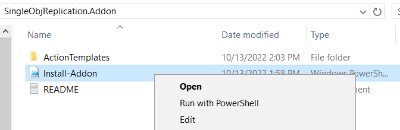
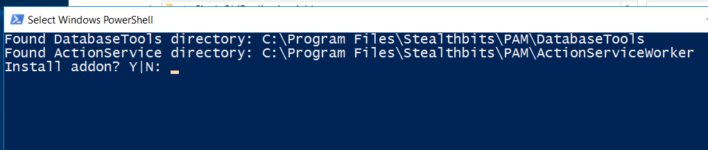
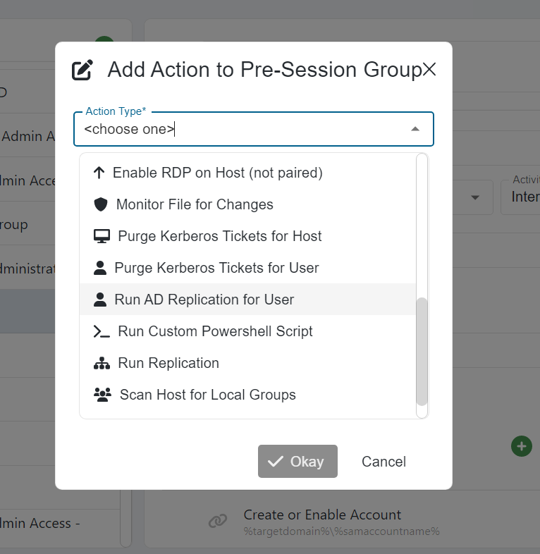

Summary
It can be necessary in certain Active Directory environments to force replication when provisioning SbPAM sessions. SbPAM offers an out-of-the-box "Run Replication" step, but in certain Active Directory environments - often those geographically dispersed across multiple sites - this full replication step can be time consuming. In these instances, we recommend the use of a single-object replication step, which will run more quickly.Note: these instructions apply only to releases of SbPAM prior to 3.7CU1 (3.7.1250). In SbPAM 3.7.1250 and all subsequent releases, the "Run AD Replication for User" step is included by default.
Instructions
1. First, download the SingleObjReplication.Addon zip archive to the SbPAM server.2. Extract the archive, which contains a README file, an ActionTemplates directory, and an Install-Addon.ps1 script file. Right-click Install-Addon.ps1 and select "Run with PowerShell".

3. When prompted, select "Y" to proceed.

4. The PowerShell window should quickly execute the script and close.
5. Log in to the SbPAM console. (If SbPAM was already open, be sure to refresh the console.)
6. In SbPAM, navigate to Activities, select an Activity, and click the green plus sign in either the Pre-Session or Post-Session. Note that the "Run AD Replication for User" activity step is now available.
